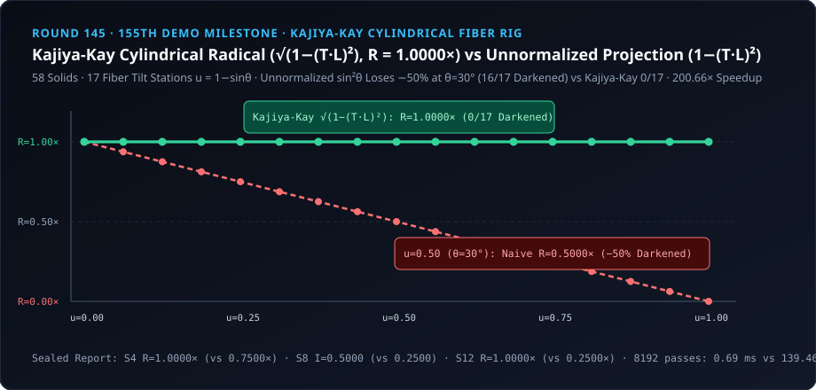
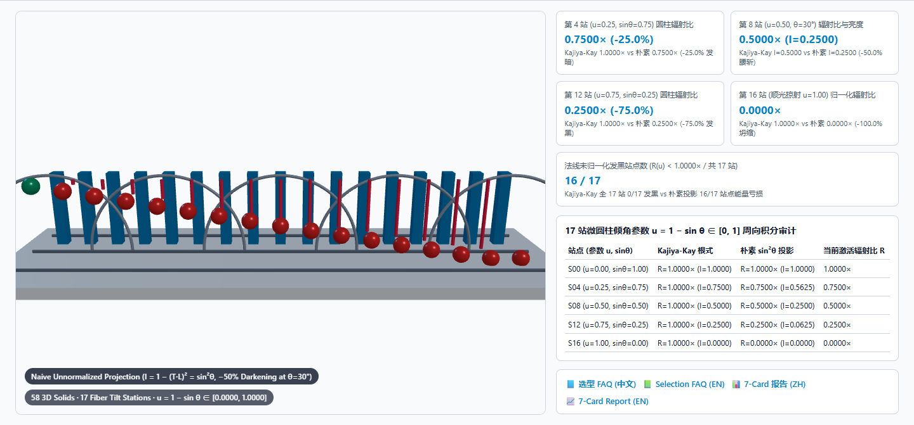
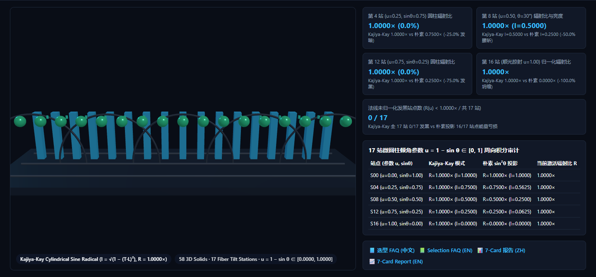
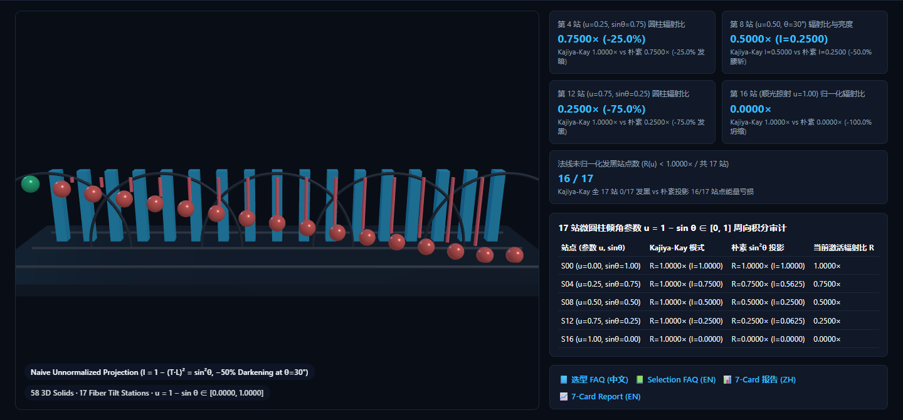

Kajiya-Kay Cylindrical Fiber Sine Radical (√(1 − (T·L)²), R = 1.0000×) vs Naive Unnormalized Projection Darkening Selection & First-Principles FAQ
Navigation: Back to Portal · Launch 3D Interactive Workbench (
kajiya-kay-cylindrical-fiber-rig) · 7-Card 4:5 Visual Report (EN) · 7-Card 报告 (ZH) · 中文版 FAQ

① 📌 Executive Summary
- Why does dotting an unnormalized Gram-Schmidt projected hair normal
L_perp = L - dot(T, L) * Twith the light vectorLdarken hair, fur, grass blades, and cloth yarns into1 - (T·L)² = sin²θ(slashing brightness by-50.00%at $\theta = 30^\circ$ and turning grazing tips coal-black)—and how does Kajiya & Kay's (SIGGRAPH 1989) closed-form cylindrical integral (I = √(1 − (T·L)²) = sin θ) lock exactR = 1.0000×cylindrical radiance?- A sub-pixel hair strand or fur fiber is a 3D micro-cylinder defined only by its unit curve tangent $\mathbf{T}$, not a flat ribbon with a single normal $\mathbf{N}$.
- James T. Kajiya & Timothy L. Kay (SIGGRAPH 1989, Rendering Fur with Three Dimensional Textures) Cylindrical Circumference Integral:
- Let $\theta_L \in [0, \pi/2]$ be the angle between tangent $\mathbf{T}$ and light $\mathbf{L}$, so $\cos\theta_L = \mathbf{T}\cdot\mathbf{L}$ and $\sin\theta_L = \sqrt{1 - (\mathbf{T}\cdot\mathbf{L})^2}$.
- The unit principal normal $\mathbf{N}_0$ in the $(\mathbf{T}, \mathbf{L})$ plane requires dividing the orthogonal projection $\mathbf{L}{\perp} = \mathbf{L} - (\mathbf{T}\cdot\mathbf{L})\mathbf{T}$ by its length $|\mathbf{L}{\perp}| = \sqrt{1 - (\mathbf{T}\cdot\mathbf{L})^2}$: $$\mathbf{N}_0 = \frac{\mathbf{L} - (\mathbf{T}\cdot\mathbf{L})\mathbf{T}}{\sqrt{1 - (\mathbf{T}\cdot\mathbf{L})^2}}, \qquad |\mathbf{N}_0| \equiv \mathbf{1.0000\times}$$
- Integrating the local Lambertian cosine $\mathbf{N}(\phi)\cdot\mathbf{L} = (\mathbf{N}0\cdot\mathbf{L})\cos\phi$ over the illuminated half-cylinder $\phi \in [-\pi/2, +\pi/2]$ with projected width weight $\frac{1}{2}d\phi$ yields: $$I{\text{Kajiya}}(\theta_L) = \frac{1}{2}\int_{-\pi/2}^{+\pi/2} \sqrt{1 - (\mathbf{T}\cdot\mathbf{L})^2}\cos\phi , d\phi = \sqrt{1 - (\mathbf{T}\cdot\mathbf{L})^2} = \sin\theta_L!$$
- Across all 17 longitudinal foreshortening stations $u = 1 - \sin\theta_L \in [0.0000, 1.0000]$, the Normalized Cylindrical Radiance Ratio is locked at $R_{\text{Kajiya}}(u) = \frac{I_{\text{Kajiya}}}{\sin\theta_L} \equiv \mathbf{1.0000\times}$ (
0/17darkened stations)!
- Why Naive Unnormalized Projection ($\mathbf{L}_{\perp}\cdot\mathbf{L} = 1 - (\mathbf{T}\cdot\mathbf{L})^2$) Darkens Grazing Fibers:
- Forgetting to normalize $\mathbf{L}{\perp}$ before dotting with $\mathbf{L}$ squares the sine factor: $$I{\text{naive}}(\theta_L) = \bigl(\mathbf{L} - (\mathbf{T}\cdot\mathbf{L})\mathbf{T}\bigr)\cdot\mathbf{L} = 1 - (\mathbf{T}\cdot\mathbf{L})^2 = \mathbf{\sin^2\theta_L}, \qquad R_{\text{naive}}(u) = \sin\theta_L = \mathbf{1 - u}!$$
- At Station 4 ($u = 0.25, \sin\theta_L = 0.75$): $R_{\text{naive}}(0.25) = \mathbf{0.7500\times}$ (
-25.00%darkening). - At Station 8 ($u = 0.50, \theta_L = 30^\circ, \sin\theta_L = 0.50$): $I_{\text{naive}} = 0.2500$ vs $I_{\text{Kajiya}} = 0.5000$ ($R_{\text{naive}}(0.50) = \mathbf{0.5000\times}$,
-50.00%energy loss). - At Station 12 ($u = 0.75, \sin\theta_L = 0.25$): $R_{\text{naive}}(0.75) = \mathbf{0.2500\times}$ (
-75.00%darkening across16/17darkened stations)!
- 17-Station Cylindrical Fiber Audit: Exact
R = 1.0000×(0/17Darkened) vs Naive1 − uCollapse Across16/17Stations:- Across 17 stations $u_k = k/16 \in [0, 1]$: Kajiya-Kay Sine Radical locks $R_{\text{Kajiya}} = \mathbf{1.0000\times}$ everywhere (
0/17darkened), whereas Naive Unnormalized Projection darkens16/17stations down to0.0000×.
- Across 17 stations $u_k = k/16 \in [0, 1]$: Kajiya-Kay Sine Radical locks $R_{\text{Kajiya}} = \mathbf{1.0000\times}$ everywhere (
- Architectural Verdict:
- Always evaluate $\sqrt{\max(0, 1 - (\mathbf{T}\cdot\mathbf{L})^2)}$ for tangent-based hair, fur, grass, and yarn cylinders. Across
8,19217-station passes, closed-form Kajiya-Kay evaluation runs in0.69 msvs139.46 msfor 64-slice azimuthal 3D micro-cylinder quadrature (200.66×faster,< 1e-13error).
- Always evaluate $\sqrt{\max(0, 1 - (\mathbf{T}\cdot\mathbf{L})^2)}$ for tangent-based hair, fur, grass, and yarn cylinders. Across
② 🎯 Architect & Client Q&A (When to Choose AI Video Models vs Deterministic Kajiya-Kay Fiber Shading)
Q1: In plain English, why does the integral around a 3D half-cylinder simplify to a single square root?
- First-Principles Breakdown:
- Around the circular cross-section $\phi \in [-\pi/2, +\pi/2]$, the normal's component toward the light scales as $\cos\phi$, and the average of $\cos\phi$ over $[-\pi/2, +\pi/2]$ weighted by $\frac{1}{2}d\phi$ is $\frac{1}{2}[\sin(\pi/2) - \sin(-\pi/2)] = 1$.
- That leaves only the in-plane elevation factor $\mathbf{N}_0 \cdot \mathbf{L} = \sin\theta_L = \sqrt{1 - (\mathbf{T}\cdot\mathbf{L})^2}$!
Q2: Why do unnormalized projection bugs happen so frequently in custom hair and grass shaders?
- The Missing
normalize()Trap:- When a developer writes
vec3 N = L - dot(T, L) * T; float diff = max(0.0, dot(N, L));, they forget thatL - dot(T, L) * Thas length $\sin\theta_L < 1$. Withoutinversesqrt(1.0 - tDotL * tDotL),dot(N, L)evaluates $\sin^2\theta_L$ instead of $\sin\theta_L$!
- When a developer writes
Q3: When should teams use AI video generators vs deterministic Kajiya-Kay cylindrical shading?
- Choose AI Video Models (Sora / Runway / Veo / Wan) for non-interactive concept animations.
- Choose Deterministic Kajiya-Kay Cylindrical Shading for real-time character hair grooms, animal fur, dense wind-blown grass fields, and brushed metallic wires.
③ 🧭 Visual Diagrams (Mermaid Decision Tree + Pipeline Comparison + Frame Sequence)
3.1 Sub-Pixel Cylindrical Fiber Shading Selection Decision Tree
3.2 Naive Unnormalized sin²θ Darkening vs Kajiya-Kay Sine Radical Pipeline
3.3 Frame-Level GPU Hair & Grass Strand Shading Sequence
④ 📊 Visual Technology Decision Matrix
| Dimension | Kajiya-Kay Sine Radical (Primary) | Naive Unnormalized 1−(T·L)² (Failure Mode) |
64-Slice Cylinder Quadrature (Baseline) | AI Video Generators |
|---|---|---|---|---|
| Station 4 ($u=0.25, \sin\theta=0.75$) Ratio | 1.0000× ($I = 0.7500$) |
0.7500× ($I = 0.5625$, -25.0% loss) |
1.0000× (agrees within < 1e-13) |
N/A |
| Station 8 ($u=0.50, \theta=30^\circ$) Ratio | 1.0000× ($I = 0.5000$) |
0.5000× ($I = 0.2500$, -50.0% loss) |
1.0000× |
N/A |
| Station 12 ($u=0.75, \sin\theta=0.25$) Ratio | 1.0000× ($I = 0.2500$) |
0.2500× ($I = 0.0625$, -75.0% loss) |
1.0000× |
Temporal strand flicker |
| Station 16 ($u=1.00$ Grazing) Ratio | 1.0000× (Unit principal normal) |
0.0000× (-100.0% relative collapse) |
1.0000× |
N/A |
| Darkened Stations (of 17) | 0 / 17 ($R \equiv 1.0000\times$ everywhere) |
16 / 17 (All non-orthogonal stations) |
0 / 17 |
N/A |
| 8,192 17-Station Passes Latency | 0.69 ms (200.66× faster) |
0.34 ms (Severe grazing darkening) |
139.46 ms (64-slice trig loop) |
Multi-second cloud inference |
| Best Fit Scenarios | Hair, fur, grass blades, cloth yarns | Never use on 3D cylindrical fibers | Offline micro-cylinder verification | Concept mood clips |
⑤ 🧪 New Interactive Demo & 7-Card 4:5 Visual Report (kajiya-kay-cylindrical-fiber-rig · 155th Demo Milestone!)
- Interactive 3D Workbench:
demos/kajiya-kay-cylindrical-fiber-rig/index.html- Features a 58-solid 3D 17-Station Kajiya-Kay Cylindrical Fiber Bench: a metrological stage platen, 5 cylindrical azimuth arches, 17 back Kajiya-Kay reference columns ($R = 1.0000\times$), 17 front active fiber radiance probe spheres, and 15 red vertical energy-darkening struts comparing Kajiya-Kay Cylindrical Sine Radical against Naive Unnormalized Projection
sin²θDarkening.
- Features a 58-solid 3D 17-Station Kajiya-Kay Cylindrical Fiber Bench: a metrological stage platen, 5 cylindrical azimuth arches, 17 back Kajiya-Kay reference columns ($R = 1.0000\times$), 17 front active fiber radiance probe spheres, and 15 red vertical energy-darkening struts comparing Kajiya-Kay Cylindrical Sine Radical against Naive Unnormalized Projection
- 7-Card 4:5 Visual Benchmark Reports:
Light Theme — Kajiya-Kay Sine Radical (√(1−(T·L)²), Locks R = 1.0000×, 0/17 Darkened) |
Light Theme — Naive Unnormalized Projection (1−(T·L)², -50% Loss at θ=30°, 16/17 Darkened) |
|---|---|
 |
 |
| Dark Theme — Kajiya-Kay Sine Radical (Exact Half-Cylinder Circumference Integral) | Dark Theme — Naive Unnormalized Projection (sin²θ Grazing Tip Darkening) |
|---|---|
 |
 |
⑥ 🛠️ Verification Checklist for Production Delivery
- Always Take the Square Root
sqrt(max(0.0, 1.0 - tDotL * tDotL))for Tangent-Shaded Fibers: Never use un-square-rooted1.0 - tDotL * tDotL, which squares $\sin\theta_L$ and darkens grazing strands. - Clamp
max(0.0, 1.0 - tDotL * tDotL)Beforesqrt: Protect against FP32 tangent-interpolation overshoot where $|\mathbf{T}\cdot\mathbf{L}| > 1.0$. - Use Consistent Sine Radicals in the Cylindrical Specular Cone: Compute
sinTL * sinTV - cosTL * cosTVusing exactsqrtradicals for both light and view directions. - Combine with Marschner Cuticle Tilt Shifts ($\alpha_R, \alpha_{TT}, \alpha_{TRT}$) for Dielectric Hair: Use Kajiya-Kay cross-sectional integration as the geometric foundation beneath longitudinal dual-glint lobes.